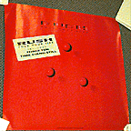
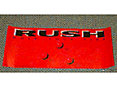
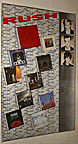
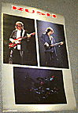
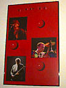
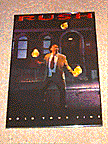
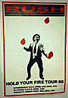
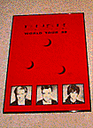

Rush Posters - Hold Your Fire
|

"square hyf album promo"
24" x 24"
Album cover of Hold Your Fire, with small white square saying "Featuring
Force 10, Time Stand Still".
|

"tiny hyf album promo"
20" x 9"
Close-up of the Hold Your Fire album cover, with "Now Available on Compact
Discs, Chrome Cassettes and Albums" written in small black print in the
corner.
|

"album brick wall"
24" x 36"
Brick wall with album covers 2112 through Hold Your Fire (minus A Farewell To
Kings), with band pictures from the album down the side.
|

"gray concert shot"
24" x 36"
Gray background with three concert shots, one of each band member.
|

"red concert shot"
24" x 36"
Red background with three concert shots, one of each band member.
|

"the juggler in color"
25" x 35"
Close-up of the juggler from inside HYF. "Rush" is written at the top in red,
and "Hold Your Fire" at the bottom in white.
|

"uk tour dates"
24" x 35"
Hold Your Fire tour poster for several UK dates in April 1988. Background is
white with a red border. "Rush in Concert" is at the top, and the juggler is
in the middle of the poster in black/white, juggling three flaming red balls.
The dates and venues are listed in black at the bottom.
|

"world tour '88"
24" x 34"
Cover of HYF with three portrait shots of the band at the bottom. "World Tour
'88" is written in the top in black. This is a UK
poster printed on heavy paper; the image is made up of small dots.
|